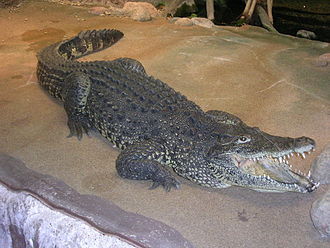

| 古巴鱷 | |  |

生物介紹：
古巴鱷（學名：Crocodylus rhombifer）是一種中型鱷魚，身長大約2米至2.5米。古巴的主要特徵是身體黑、黃雙間，以及眼球之上的位置有骨質突起。古巴鱷極為好勇鬥狠，能夠整個身體跳出水面捕食。古巴鱷年幼時主要進食魚類及無脊椎動物為生，成年後則改為進食龜與其他哺乳類動物。牠們的巢是於地上挖掘出來，巢內混有爛泥及植物。繁殖方面，古巴鱷每次生20至50隻蛋。另一方面，牠們與美洲鱷交配。
分布：
古巴鱷是分布範圍最小的一種鱷魚，主要分布於中美洲古巴的札巴塔沼澤地，並主要棲息於淡水沼澤及濕地之內。
原因：
古巴鱷的最大威脅是從青年島引進的眼鏡凱門鱷，因為牠們以古巴鱷的幼鱷作為食物之一。
保育：
古巴鱷於1959年接近絕種。因此，古巴政府於1959年至1960年期間在野外捕捉了數百條野生古巴鱷於飼養場作保育用途。經過保育計劃之後，古巴鱷開始重建其種群。目前古巴一共有3個大型飼養場。